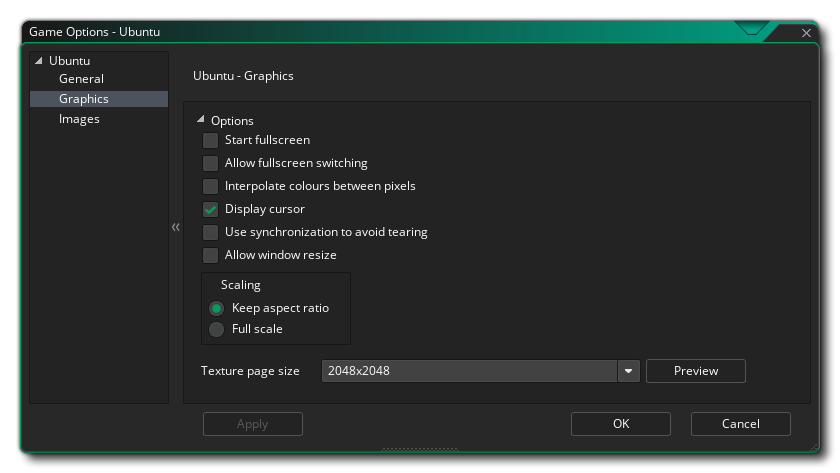

Cette section présente les différentes options qui s'offrent à vous et qui contrôlent la compilation de vos projets de jeu Ubuntu (Linux). Les différentes sections sont:
Cet onglet est l'endroit où vous définissez le nom de votre jeu tel qu'il doit être affiché pendant l'exécution, et peut également fournir un email de contact et une description (courte et longue), ainsi qu'une URL pour la page d'accueil du jeu ou le développeur.

Les options graphiques sont celles que vous devez configurer pour déterminer comment votre jeu utilisera la carte graphique de votre machine Ubuntu cible. Les options suivantes sont incluses pour vous permettre de modifier:
- Start Fullscreen: Si cette case est cochée, le jeu commencera en mode plein écran sinon il démarrera en mode fenêtré. Ceci est désactivé par défaut.
- Autoriser la commutation en mode plein écran: Avec cette option, l'utilisateur peut passer de plein écran à fenêtré et vice-versa en utilisant les raccourcis standard de l'OS Ubuntu. Ceci est désactivé par défaut.
- Interpoler les couleurs entre les pixels: Active l'interpolation, qui "lisse" les pixels. Pour les graphismes en pixels nets, il devrait être désactivé, mais si vous avez de beaux dégradés alpha et des graphismes lissés, il est préférable de laisser le bouton actif. Ceci est désactivé par défaut.
- Curseur d'affichage: Lorsque cette option est activée, le curseur OS par défaut sera affiché dans votre jeu. Si cela est désactivé, alors que la souris est au-dessus de la fenêtre de jeu, il n'y aura pas de curseur visible sauf si vous en avez créé un dans le cadre du projet de jeu (il est activé par défaut).
- Utilisez la synchronisation pour éviter la déchirure: cette option active ou désactive la synchronisation antivirus (v-sync est utilisée pour synchroniser la vitesse de mise à jour du jeu sur la fréquence de rafraîchissement du moniteur). Notez que si vous avez un jeu avec une vitesse de pièce de 120 et que le joueur a un moniteur avec un taux de rafraîchissement de 60, activer cette option verrouillera votre vitesse de jeu à 60 aussi. Ceci est désactivé par défaut.
- Autoriser le joueur à redimensionner la fenêtre de jeu: Cocher ceci permet à l'utilisateur de changer la taille de la fenêtre de jeu (l'option Fenêtre sans bordure doit être désactivée pour que cela fonctionne). Cette option est désactivée par défaut.
- Mise à l'échelle: Ici, vous pouvez choisir de conserver le rapport d'aspect (de sorte qu'une pièce 4: 3 sera "boîte aux lettres" sur un 16: 9) ou à l'échelle complète (étirement de l'image pour s'adapter à l'écran).
ATTENTION! La désactivation de la surface d'application désactivera toutes les options de mise à l'échelle définies dans les options de jeu d'Ubuntu jusqu'à ce qu'elle soit rallumée. Voir la surface d'application pour plus de détails.Enfin, il y a la possibilité de définir la taille de la page Texture. La taille par défaut (et la plus compatible) est 2048x2048, mais vous pouvez choisir n'importe où entre 256x256 jusqu'à un énorme 8192x8192! Il y a aussi un bouton marqué View qui va générer les pages de texture pour cette plate-forme, puis ouvrir une fenêtre pour que vous puissiez voir à quoi ils ressemblent. Cela peut être très utile si vous souhaitez voir comment les pages de texture sont structurées et éviter d'avoir des pages de texture plus grandes (ou plus petites) que nécessaire.
REMARQUE: sachez que plus la taille de la page de texture est grande, moins votre jeu sera compatible avec les Mac dont les spécifications sont inférieures.
Ici vous pouvez ajouter un écran de démarrage pour votre jeu, et définir l'icône du jeu qui sera utilisé. L'icône doit être une image de 64x64 pixels dans le .png format, et l'écran de démarrage doit être au moins de la même taille que la première salle de votre jeu (ou son port de vue) et être .png format aussi. L'écran d'accueil s'affiche pendant le chargement du jeu et peut être activé ou désactivé en cochant l'option Utiliser l'écran d' accueil (désactivée par défaut).
Il est à noter que GameMaker Studio 2 dispose d'un outil Project Image Generator qui peut être utilisé pour créer automatiquement toutes les images requises pour les différentes plates-formes cibles sur lesquelles votre jeu est compilé. Si vous utilisez cet outil, vous devez réviser les images créées pour vous assurer qu'elles correspondent à vos besoins.